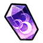
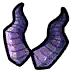

デストラの性能
デストラ | ||
|---|---|---|
| レアリティ | R | |
| レベル | 90 | |
| 属性 | 魔 | |
| 攻撃 | 物理 | |
| 武器 | 投 | |
| 隊列 | 前列 (射程：240) | |
| 役割 | タンク | |
| 行動速度 | 遅い | |
| サポート | 最大HP800UP / 物理攻撃55UP | |
| サポートボーナス | 魔属性攻撃+ / 攻撃+ | |
| HP | 治癒 | HP回復 |
| 39462 | 313 | 701 |
| 物理攻撃 | 物理クリ | MP回復 |
| 2232 | 10% | 200 |
| 魔法攻撃 | 魔法クリ | HP吸収 |
| 725 | 4.8% | 0 |
| 物理防御 | 魔法防御 | MPチャージ |
| 79 | 57 | 120 |
| 命中 | ブロック | MP消費減少 |
| 189 | 274 | 0 |
行動タイムライン
行動速度:
ｽｷﾙ1 攻撃 攻撃 ｽｷﾙ2
LOOP 攻撃 攻撃 ｽｷﾙ1 攻撃 攻撃 ｽｷﾙ2 攻撃
補足
硬直時間は完璧でないので参考程度に。
このタイムラインでは行動速度は常に一定で、スキルに行動速度UP効果があったとしても反映していません
MP増加イメージ
経過
内訳
0%
25%
50%
75%
100%
補足
この表は「MPが100%に到達するタイミング」を示していますが、実際のオート操作では 直前にスキルや通常攻撃をした場合、その硬直が解けるまで奥義を撃ってくれません。
（例：1.8秒にスキル使用 → 2秒でMP満タン → しかし硬直中のため奥義発動は遅延）
手動操作で奥義ボタンを連打すれば、この硬直をキャンセルして即発動が可能です。
※キャラクターによって異なるが1秒ほどで硬直が解けます。
奥義
 さあ、ハデスの世界へ♪ さあ、ハデスの世界へ♪ | |
|---|---|
| Lv.5 | 一番近い敵3人に物理ダメージ374%+512、10秒の物理防御20%DOWN |
| Lv.4 | 一番近い敵3人に物理ダメージ352%+488、10秒の物理防御18%DOWN |
| Lv.3 | 一番近い敵3人に物理ダメージ320%+453、10秒の物理防御16%DOWN |
| Lv.2 | 一番近い敵3人に物理ダメージ275%+409、10秒の物理防御13%DOWN |
| Lv.1 | 一番近い敵3人に物理ダメージ220%+304、10秒の物理防御10%DOWN |
スキル
 通常攻撃 通常攻撃 |
|---|
| 【硬直時間】2.49s 【硬直時間(クリティカル)】2.49s |
 ちょっとだけ ちょっとだけ |
【硬直時間】3.21s 一番近い敵1人に物理ダメージ240%+1530、自身に8秒の挑発 |
 ご案内～♪ ご案内～♪ |
【硬直時間】2.91s 自身にHP回復2500%+5450 |
補足
パッシブ等の行動速度UPを考慮していない行動速度0%のときの硬直時間です。
パッシブ
奥義レベル3で開放
 パッシブ1 パッシブ1 |
|---|
| 自身の物理攻撃+130 |
奥義レベル5で開放
 パッシブ2 パッシブ2 |
|---|
| 自身の最大HP+1447 |
絆ボーナス
| ブロック | ||||
|---|---|---|---|---|
1 | 1 | 3 | 3 | 5 |
5 | 7 | 7 | 9 | 9 |
| HP | ||||
0 | 150 | 150 | 350 | 350 |
550 | 550 | 750 | 750 | 950 |
備考
| イラスト | 深泥正 |
|---|---|
| ボイス | 榛名れん |
| 役割 | タンク |
| スキル | 弱体化、挑発 |
| 身長 | 163cm |
| 体型 | B95(I)/W57/H92 |
| 実装日 | 2023/09/11 |
| 入手方法 | 恒常 |
| 主な限界素材 |    |
※各項目は聖騎士Lv、スキル、アビリティ、奥義、絆、覚醒、を最大育成し、パッシブ効果を加えた能力値です。